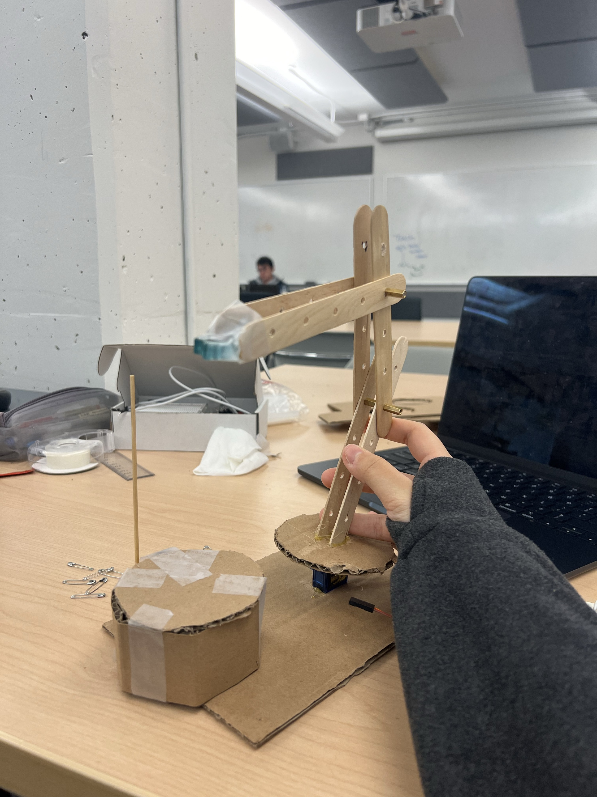
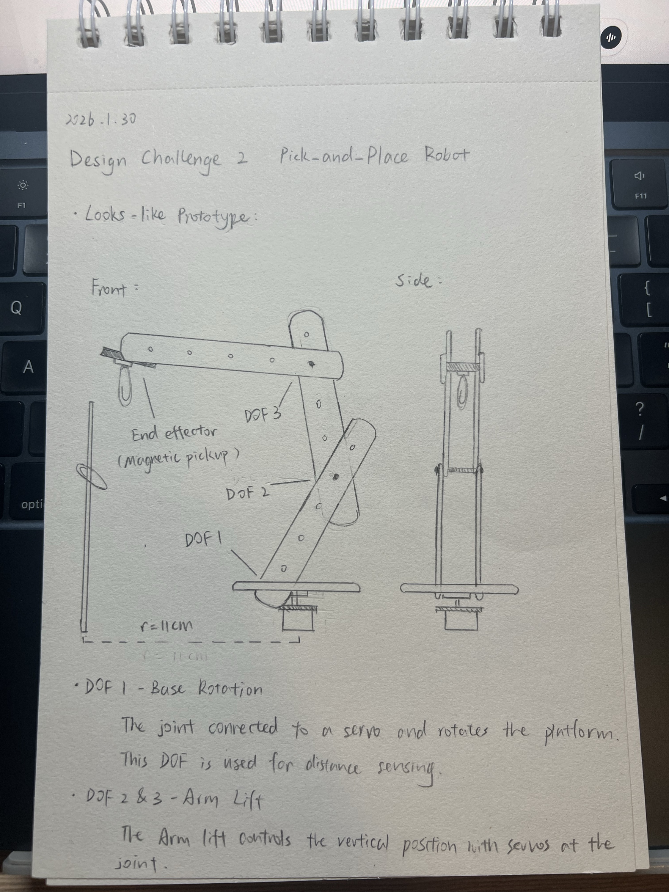

January 2026
Pick-and-Place Robot
Magnetic End-Effector Arm
Overview
A looks-like / works-like prototype of a pick-and-place robot that picks up a small object at one end of a table and places it at the other. The design is mechanically plausible and includes a degrees-of-freedom analysis and a distance-sensing (encoder) prototype.

Parts list
- Servo motor
- Rotates the base (DOF 1) and lifts the arm at the joints (DOF 2 and 3).
- Magnet
- Passive end-effector that picks up the paper clip.
- Potentiometer
- Provides the manual input used to control the base servo angle.
- Popsicle sticks
- Main body of the robotic arm.
Modeling
Robotic arm: popsicle sticks joined with screws and nuts.
Base servo: attached to the cardboard platform with hot glue. The platform is mounted on the servo, and a potentiometer provides the manual control input for its rotation.

Mechanical design (Looks-like prototype)
DOF 1, Base rotation: the rotating platform is mechanically connected to the base servo. Turning the potentiometer controls the servo angle, rotating the platform and the arm together. Base rotation is also the DOF analyzed in the distance-sensing prototype.
DOF 2 & 3, Arm lift: servos at the joints control the vertical position of the arm.
End-effector, magnetic pickup: it picks the object up passively, so it needs no extra DOF. A paper clip is placed by threading it through a wooden stick to complete the placement.
Built with craft materials, with front and side annotated sketches.
Distance Sensing (Works-like prototype)
For the distance-sensing prototype, the base joint is encoded with a potentiometer, which converts rotational position into voltage.
The end-effector moves along a circular path. Measured radius from base axis to end-effector: r = 11 cm.
When the base rotates θ degrees, the arc-length distance travelled is s = rθ = 11 · θ · π/180.
Circuit: potentiometer signal → analog input A0, plus 5V and GND.